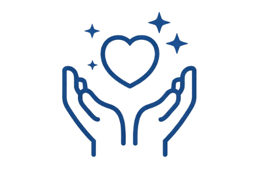
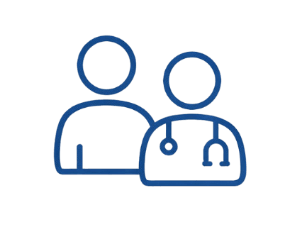

Sobre nós
Somos uma equipe de jovens desenvolvedores apaixonados por tecnologia e por criar soluções que realmente façam a diferença na vida das pessoas.

Nossa missão
Proporcionar um ambiente acolhedor e acessível para que as pessoas possam cuidar de sua saúde mental de forma fácil e eficiente. Acreditamos que a tecnologia pode ser uma aliada poderosa na promoção do bem-estar emocional, e é por isso que criamos o Psicocenter.

Nossa equipe
Composta por 5 estudantes dedicados, nossa equipe se compromete em oferecer o melhor atendimento e suporte para nossos clientes.